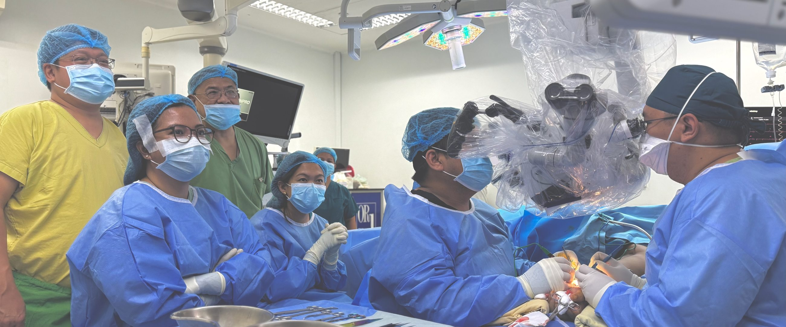
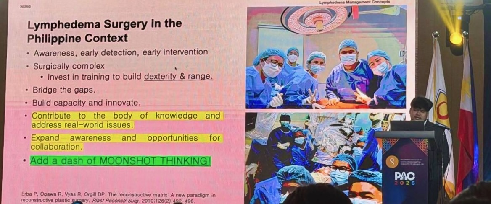

A practical guide for oncologists, breast and vascular surgeons, physiatrists, and certified lymphedema therapists coordinating care for microsurgical evaluation — lymphaticovenous anastomosis, vascularised lymph node transfer, or reduction surgery — at the flagship lymphedema consultancy, St. Luke’s Medical Center, BGC.

Coordination doesn’t require staging to already be established — that workup happens here — but a working sense of severity helps triage the visit.
None of this is required — whatever you’re able to share helps, and any gaps get filled in at the visit.

Patients travelling from outside Metro Manila or from abroad can be scheduled for a concentrated visit — workup and, where appropriate, surgery timed within a single trip. See how care works for patients travelling from a distance.
Whatever’s easiest works — an email to hello@pacificocruz.com, or a call, Viber, or WhatsApp message to the clinic directly, below. Any notes on the case are welcome, but even a short description is plenty to get things started — and we’ll follow up with you after the visit.